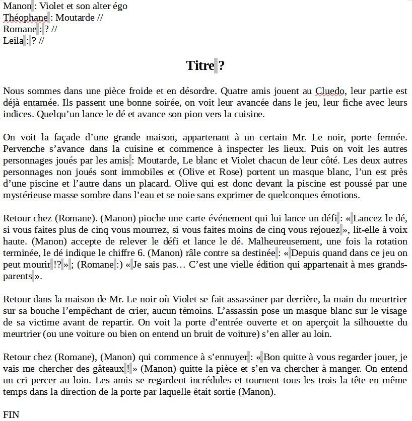
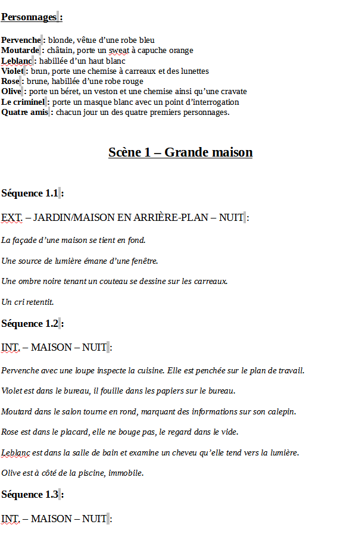
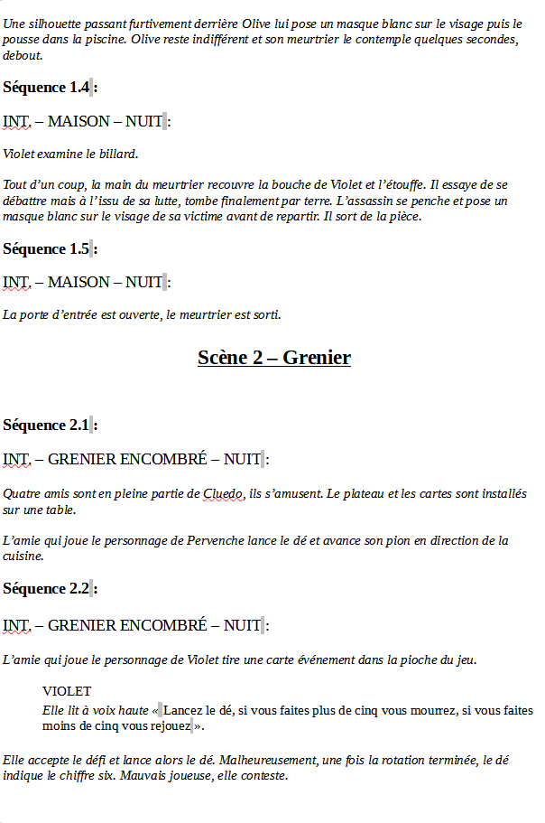
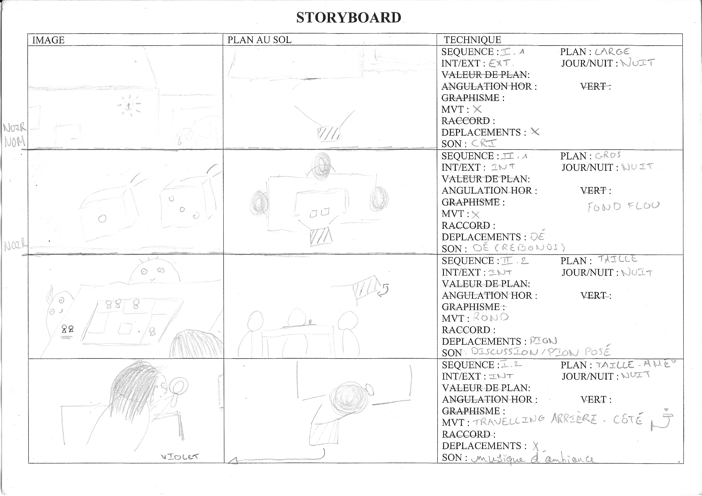
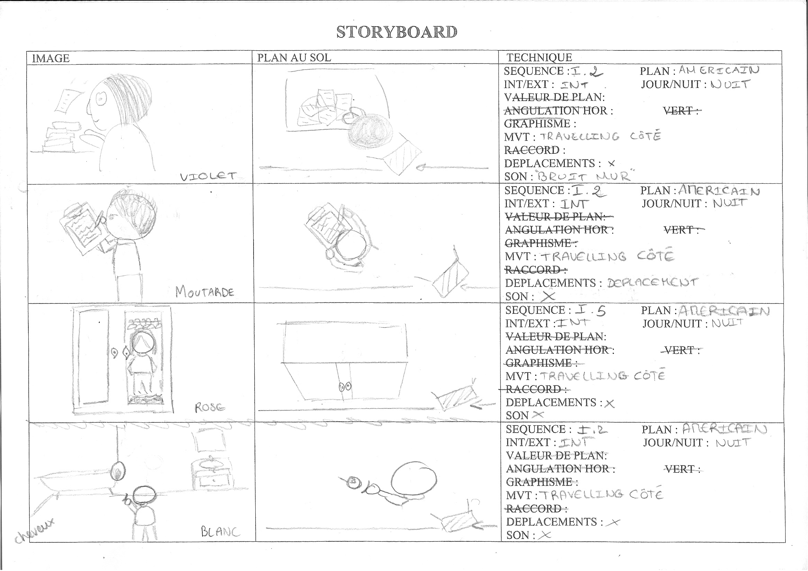
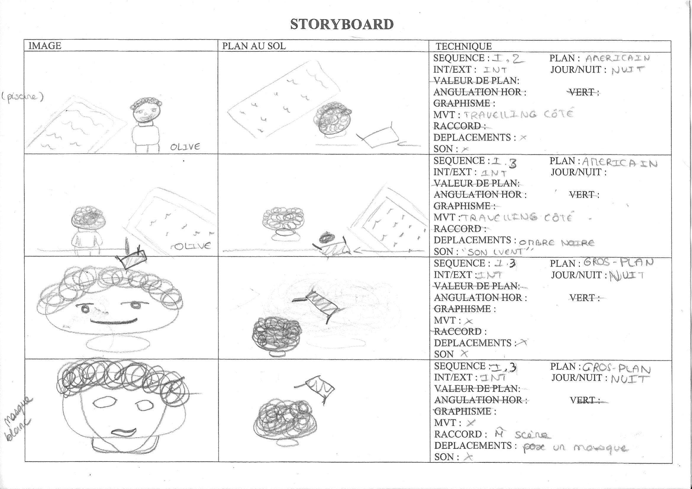
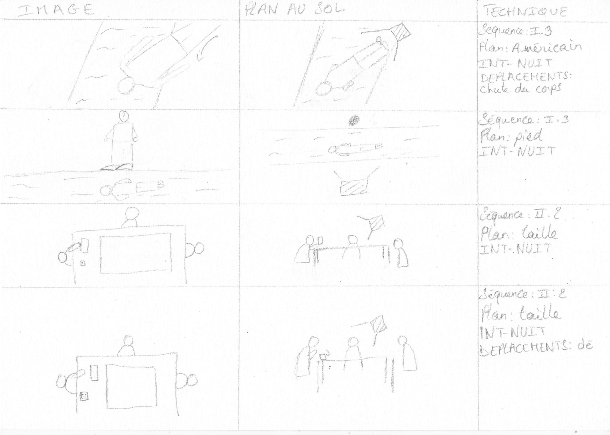
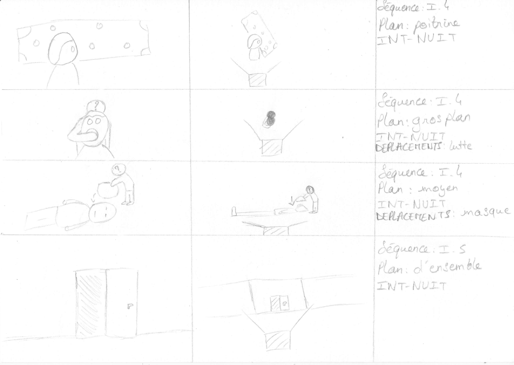
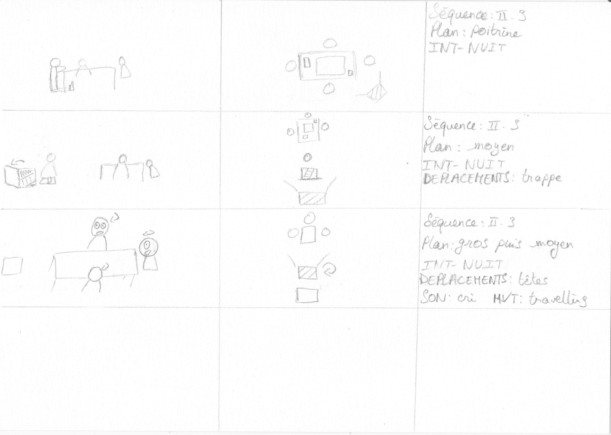

Après avoir organisé un festival du court métrage dans l'enceinte de notre établissement en seconde avec l'option arts visuels, l'année suivante, en première, nous devions réaliser notre propre court métrage. Pour cela, nous disposions de l'année entière pour bien le travailler par groupe de quatre tout en échangeant avec un écrivain intervenant.
Ainsi, à travers ce projet, nous nous sommes initiés aux différents métiers qui régissent un projet d'une telle envergure, à savoir : producteur, réalisateur, scénariste mais également accessoiriste, cadreur, repéreur, costumier, monteur son et image et bien d'autres encore !
Vous retrouverez donc ici la timeline détaillée du déroulement de ce projet comprenant également les problèmes rencontrés.
Pour mener à bien notre court métrage nous devions répondre à plusieurs contraintes. Nous devions impérativement filmer nos séquences à l'aide d'un téléphone portable sur l'application Open Camera. De plus, il nous était fortement déconseillé d'excéder 5 minutes de durée. Enfin, le court métrage devait porter sur le thème choisit d'un commun accord entre notre professeure d'arts visuels et l'écrivain intervenant : qui était celui du "masque". Pour cela nous avions à intégrer de la manière que nous le désirions un masque (il pouvait tout aussi bien être physique que métaphysique) et étions libre quant aux restes des directions artistiques.
Prémisses du scénario
30 Novembre, 2019
Avant toute chose, nous avons commencé par réunir toutes nos idées sous forme de brainstorming sur un éditeur de texte collaboratif. Ce procédé nous a permis de dégager la trame scénaristique principale sur laquelle nous nous sommes engagés.
Notre inspiration émanait directement de l'univers du Cluedo, qui est une référence qui nous parlait alors à tous.

Premières ébauches du scénario
Repérage des lieux
18 Janvier, 2020
Afin de mieux visualiser et de nous projeter plus facilement, nous avons cherché les lieux où nous pourrions tourner les séquences de notre court métrage. De plus, le fait de connaître les lieux à l'avance nous a été d'une grande aide pour finaliser notre scénario.
Finalisation du scénario
29 Janvier, 2020
Ré-écriture et correction du scénario :


Scénario final
Story-board
12 Février, 2020
Comme pour toute production visuelle, nous avons réalisé un story-board aux dessins assez élémentaires et récapitulé les informations succinctement pour faciliter la compréhension de chaque plan. Chacun de ces plans est représenté par un dessin de ce que la caméra voit ainsi que d'un dessin en vue de dessus. Les informations renseignées sont : le numéro de la scène et de la séquence, le type de plan, s'il s'agit d'une scène de nuit ou de jour ainsi que d'intérieur ou d'extérieur, les déplacements des acteurs, les mouvements de la caméra et enfin les sons (bruits ou musiques) diégétiques ou extradiégétiques qui peuvent être éventuellement joués.






Story-board
Dates de tournage
14 Février, 2020
Désormais que nous étions fins prêts pour tourner, il ne nous manquait plus qu'une date (voire plusieurs) date(s) de tournage. C'est un élément important dans la chronologie de notre progression puisque nous avons eu des difficultés à trouver une date convenant à tous les membres de notre groupe. C'est à cause de ces indisponibilités répétées et des circonstances sanitaires qui sont apparues peu après, que nous avons été dans l'incapacité d'achever notre projet.
Recherche du matériel
17 Février, 2020
Avant de nous retrouver et de tourner il nous manquait toutefois du matériel. Je me suis donc chargé de lister les accessoires nécessaires, d'attribuer à des acteurs les rôles qui étaient jusqu'alors sans comédiens et d'inventorier les costumes déjà convenus lors de l'écriture du scénario.
Inventaire des éléments indispensables
Première journée de tournage
04 Mars, 2020
Finalement nous avions réussi à nous regrouper une après-midi pour tourner les premières scènes de notre court métrage. Nous nous sommes ainsi rendu compte du temps nécessaire, assez conséquent, pour ne simplement garder que quelques scènes lors du montage.
Deuxième journée de tournage
08 Mars, 2020
Lors des journées de tournage nous devions aussi préparer notre environnement tel que sa luminosité et vérifier que nous étions en raccord avec le story-board.
Résumé du court métrage
22 Mars, 2020
Avant de sortir notre court métrage nous devions en préparer la communication. En raison de la crise sanitaire nous n'avions eu à rédiger que le résumé.
Montage vidéo et sonore
30 Mars, 2020
Après avoir fait du dérushage parmi les nombreuses vidéos prises lors des jours de tournage, j'ai pu monter les 12 premières secondes de notre court métrage (que vous pouvez visionner plus haut sur cette page) sur le logiciel Sony Vegas Pro 17 en m'aidant également d'Audacity pour pallier certains problèmes sonores. Bien que le projet n'ait pas abouti, il nous a permis d'acquérir de l'expérience dans le domaine de la réalisation visuelle et numérique. C'est un projet que je n'hésiterai pas à réaliser de nouveau mais en espérant pouvoir aller jusqu'au bout, contrairement à cette fois !